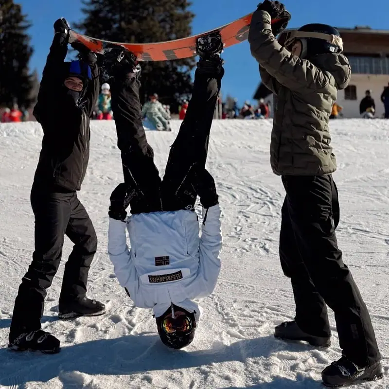
4000+ м
Катання в Saas-Fee і Saas-Grund
Траси серед вершин понад 4000 метрів. Українські інструктори й міні-групи за рівнем — стати на лижі чи сноуборд можна з нуля.
Швейцарія · Saas-Grund · 18–31 грудня 2026
Схили Saas-Fee і Saas-Grund серед вершин понад 4000 м, 11 км на санках, шоколадна фабрика Lindt, вечірки й Різдво разом. А поруч — ментори, психолог і медик.
До виїзду —
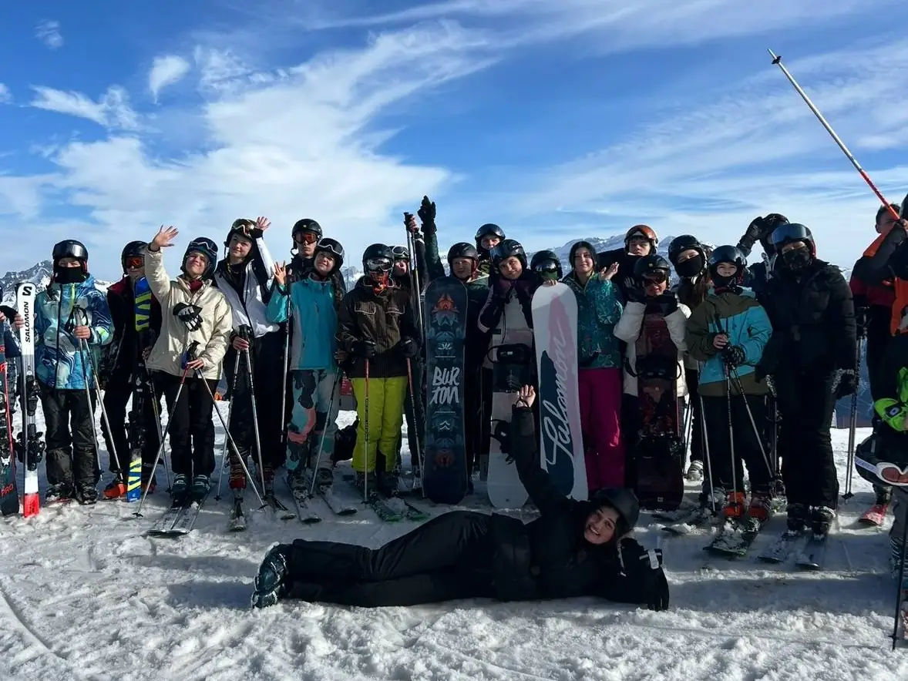
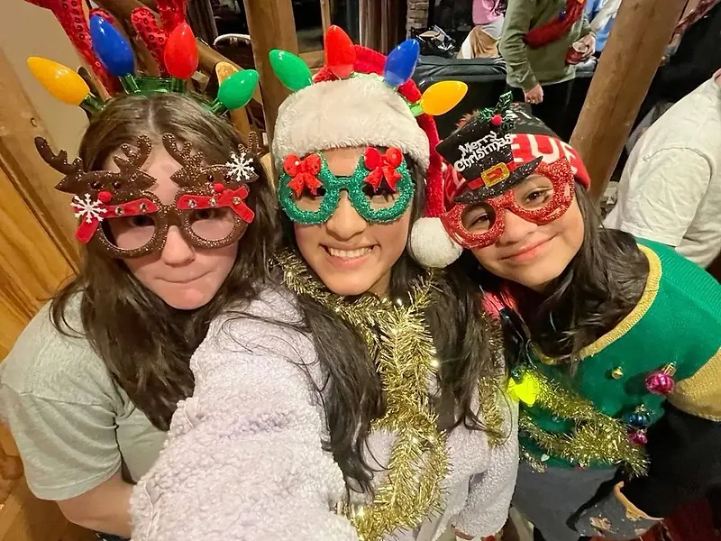
Підйомник — через дорогу від шале
Програма
14 днів — і жодного нудного. Ось лише частина.

Траси серед вершин понад 4000 метрів. Українські інструктори й міні-групи за рівнем — стати на лижі чи сноуборд можна з нуля.
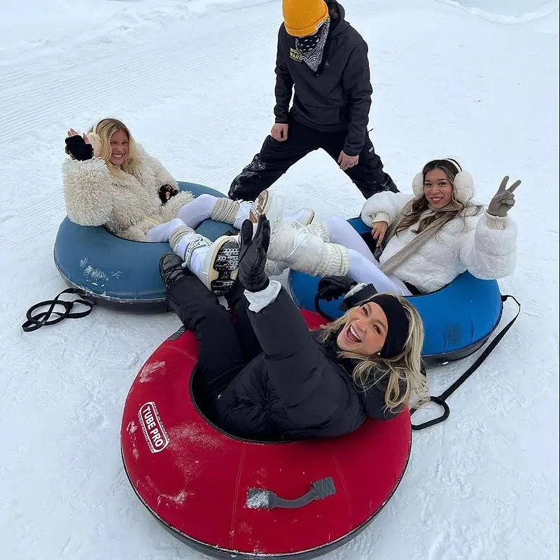
Одинадцять кілометрів униз на санках. Ні, це не помилка.
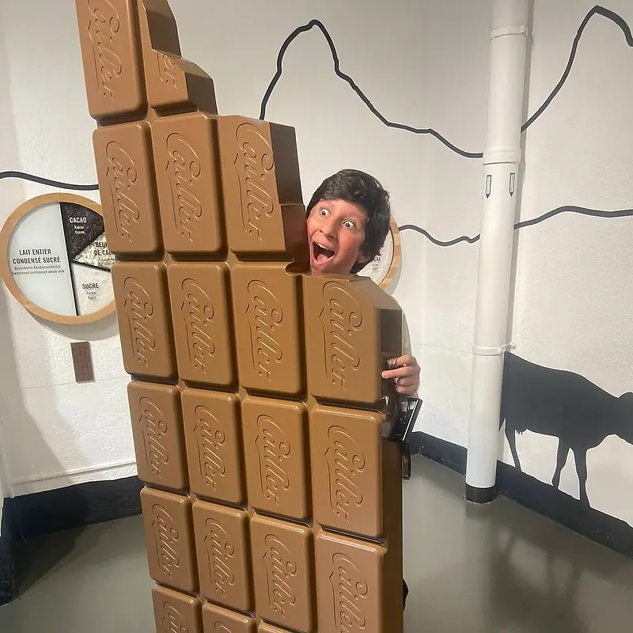
Шоколадний фонтан заввишки у два поверхи і все про швейцарський шоколад.
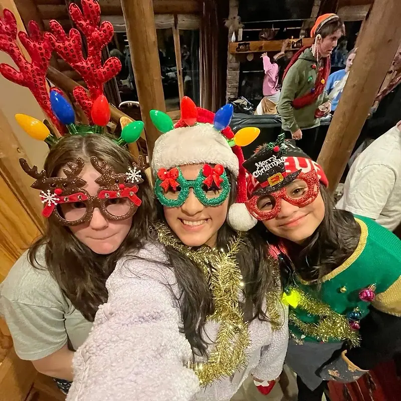
Кутя, вертеп, колядки — і свято зі своїми людьми, далеко від дому, але як удома.
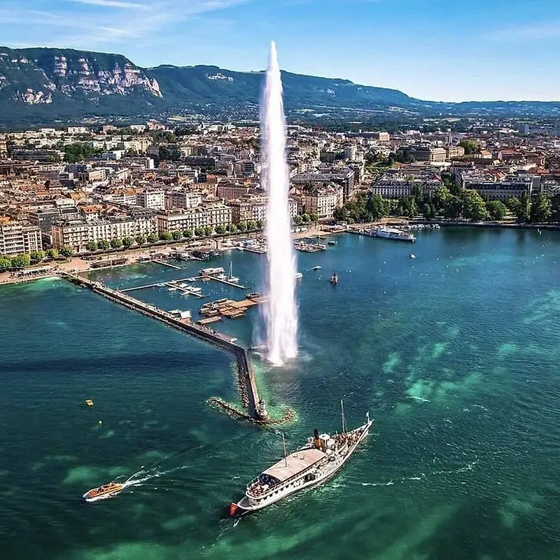
Фонтан Jet d’Eau над озером, музеї, рок-концерти й різдвяні ярмарки.
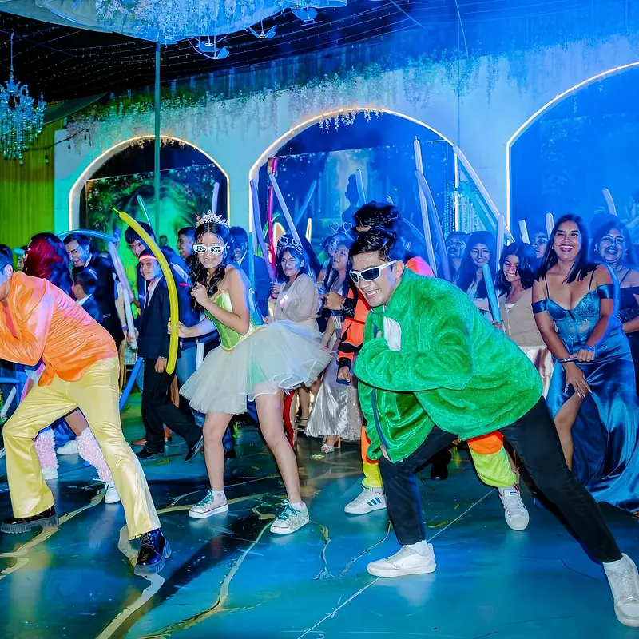
Дискотеки, конкурс талантів від ZARINA і вечори, які згадують до весни.
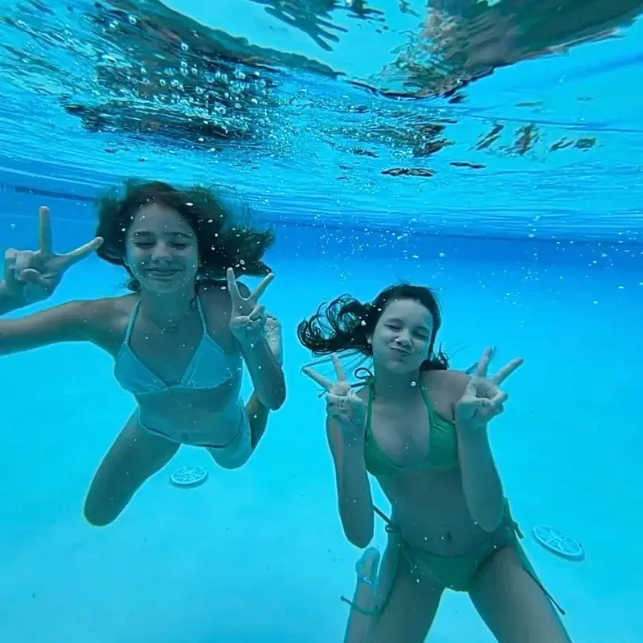
Теплі басейни після днів на схилі — найкраще перезавантаження.
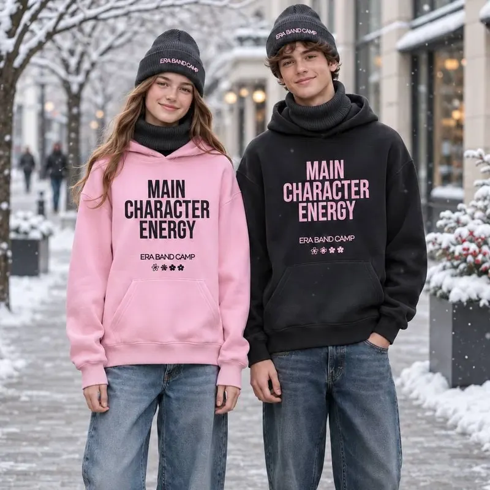
Вибери свій образ завчасно. У Повному пакеті худі вже включене.
Їдемо автобусом разом із командою (пакети «Екстра» і «Повний»). У «Базовому» дорога до Saas-Grund і назад — самостійно. Учасникам із Києва допомагаємо дістатися до Львова.
Програма по дняхПрограма по днях
14 днів, і кожен — свій. Гортайте й пройдіть увесь маршрут разом із дитиною.
ERA BAND CAMP · Winter 2026
ЗвідкиЛьвівабо Київ — потягом
КудиSaas-Grundдолина Saastal, Швейцарія
18–19 грудня
Київ → Львів → Європа
18грудня · пт
О 20:50 — потяг Київ — Львів (додаткова опція). Вагон-паті в піжамах і з новорічними гірляндами.
19грудня · сб
О 06:30 — автобус зі стоянки залізничного вокзалу Львова. Кордон, європейські пейзажі й транзитна ночівля в Чехії.
20–26 грудня
Шале Annabelle, долина Saastal
20грудня · нд
Прибуття до Saas-Grund (до 21:00), заселення в шале Annabelle, вечеря й відпочинок.
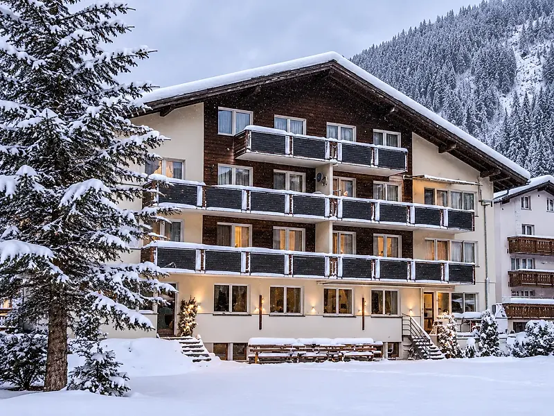
21грудня · пн
Посвята в ерабендівці й правила табору. Інструктаж і техніка безпеки в горах від 7 інструкторів з України, отримання спорядження й знайомство з регіоном. Старт музичного й театрального проєктів — і перше катання для найсміливіших. За бажанням — заняття у швейцарській лижній школі.
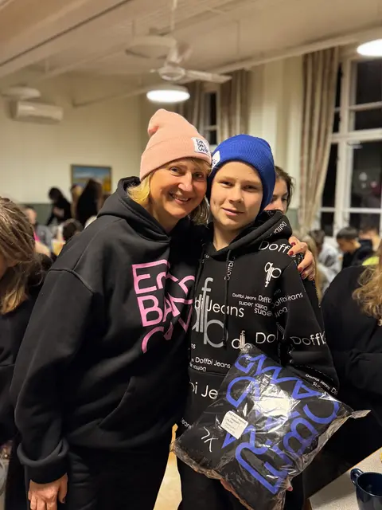
22грудня · вт
Лижі та сноуборди в Saas-Grund і Saas-Fee: групи за рівнем з інструкторами, можна займатися й зі швейцарською школою. Репетиція різдвяної вистави, басейн — за бажанням (можна щодня).
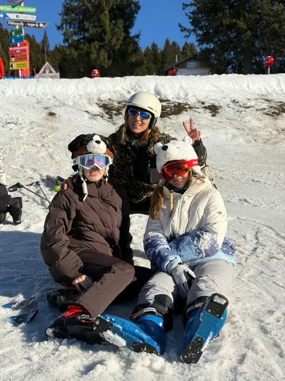
23грудня · ср
Нові траси, вдосконалення техніки й панорами швейцарських Альп. Творчість і музика, а за бажанням — поїздка в терми.
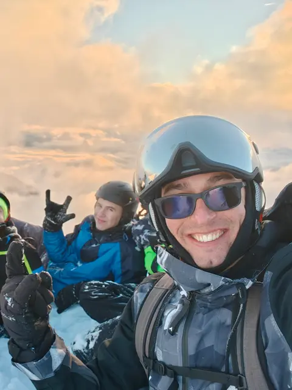
24грудня · чт
Продовження катання, підготовка до Різдва й репетиції. Знайомство з хаскі та прогулянка на снігоступах (поїздка до хаскі — за попереднім бронюванням).
25грудня · пт
Катання й творча програма, а ввечері — святкова вечеря з кутею, колядки й традиції великої родини ERA BAND CAMP.
26грудня · сб
Санна траса Kreuzboden — Saas-Grund: 11 кілометрів униз на санках, а ще маленькі санні траси. Для найсміливіших — ще день катання. Рефлексія з подякою Альпам, підготовка до концерту в Женеві й вечірня дискотека.
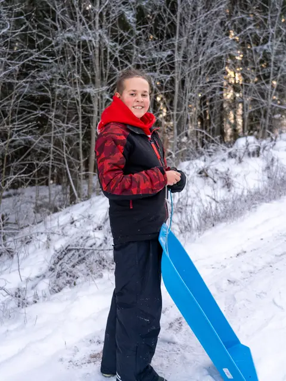
27–28 грудня
Тропіки посеред зими, озеро й сцена
27грудня · нд
День самоврядування. Тропічні теплиці Ботанічного саду Женеви, кораблик Женевським озером, історичний центр і фонтан Jet d’Eau — і 2 години, щоб пізнати Женеву самостійно.
28грудня · пн
Виступ ERA BAND CAMP на сцені Music Hall у Женеві й святкова вечірня програма.
29–31 грудня
Шоколад на дорогу — і назад в Україну
29грудня · вт
Екскурсія Цюрихом, а в Lindt Home of Chocolate — екскурсія й дегустація. Після — виїзд в Україну.
30грудня · ср
Переїзд Європою до Львова — з купою фото й історій. Транзитна ночівля.
31грудня · чт
Пересадка у Львові, потяг або автобус до Києва та інших міст — і зустрічаємо Новий 2027 рік у родинному колі.
Спілкування, прогулянки й фотосесія. Або катання на собачих упряжках.
Репетиції, музичні заняття, дискотеки й конкурс талантів.
Басейн, ковзанка й зимові прогулянки.
Прогулянки в гори на снігоступах.
За бажанням: 4 дні по 2 години.
Командна робота й підтримка менторів щодня.
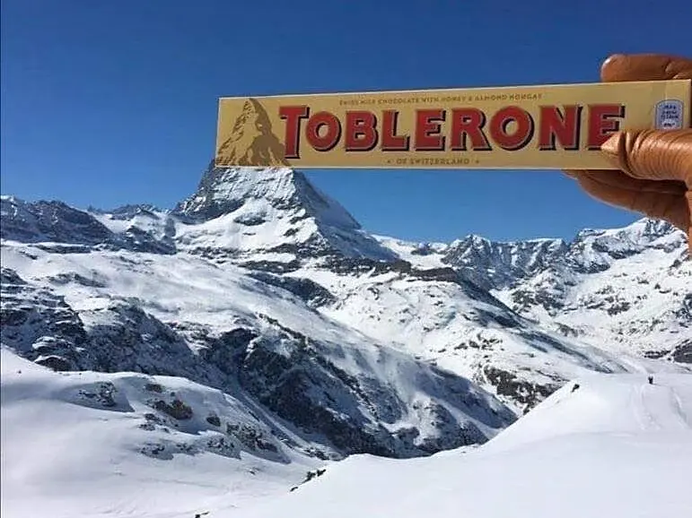
Церматт · Маттерхорн
4478 метрівЇдемо до Маттерхорна — тієї самої гори, що на обгортці Toblerone. Панорамні краєвиди, засніжені вершини навколо і справжній Льодовиковий палац, вирізаний просто всередині льодовика.
Сподобалась програма? Підберемо пакет за хвилину, решту розкаже менеджер.
Хочу в цю програмуДля батьків
Ви щодня знаєте, де дитина і як вона почувається.
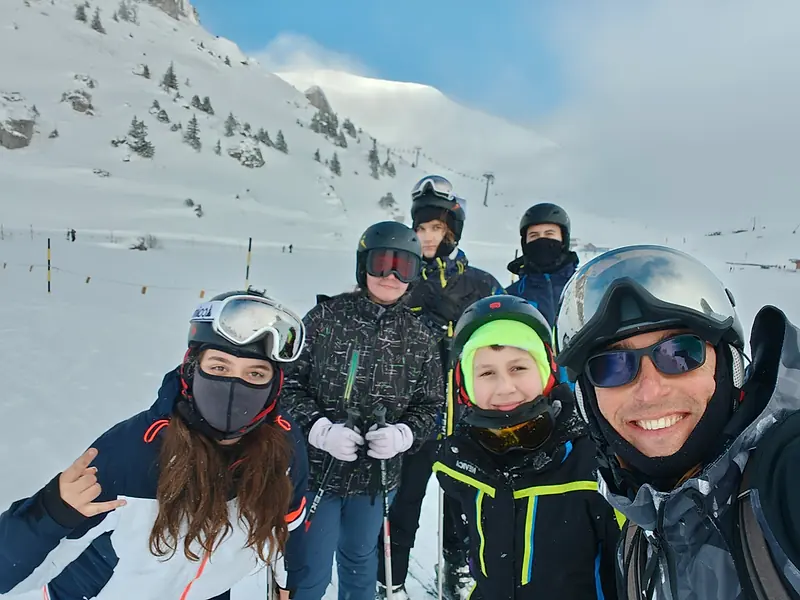
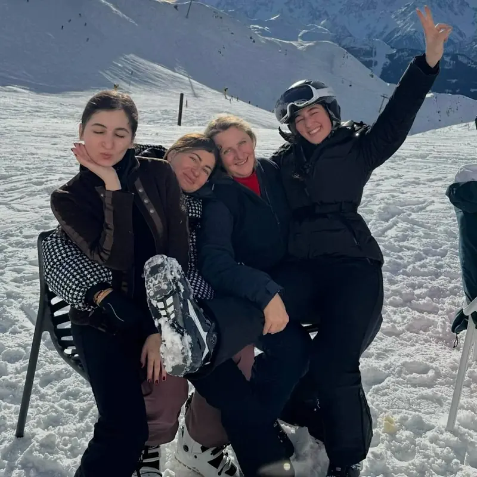
У дорозі, на схилі й у шале.
Увесь час поруч, від виїзду до повернення.
Допомагає дитині адаптуватися та знайти своїх.
Фото й новини кожен день. Менеджеру можна подзвонити будь-коли.
Права, обов'язки, відповідальність за життя й здоров'я. Повернення коштів або перенесення на наступну зміну.
Обовʼязкове. У Повному пакеті вже в ціні.
З інструкторами, кожен у своєму темпі.
Але менше екранів і більше живого спілкування.
До поїздки організуємо онлайн-зустріч з нашим психологом. Дитина поставить свої питання і поїде спокійною.
1 560 м
Дім на тиждень у горах
Всередині шале
Світлі кімнати на 2–5 осіб, душ і санвузол.
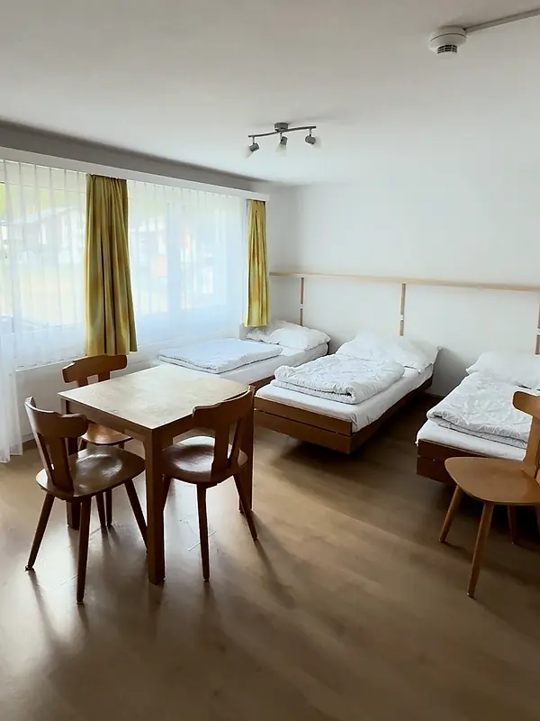
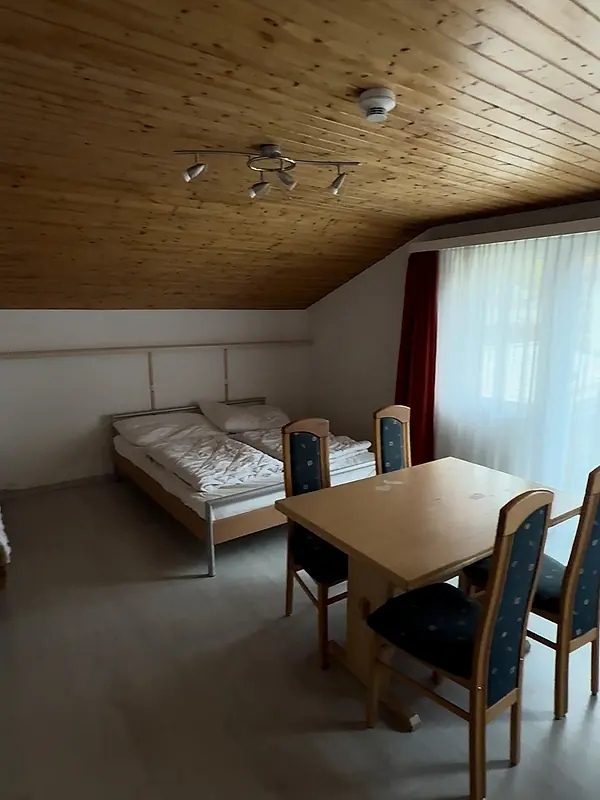
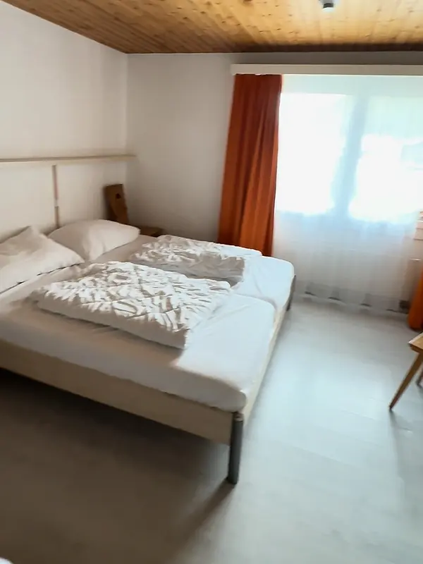
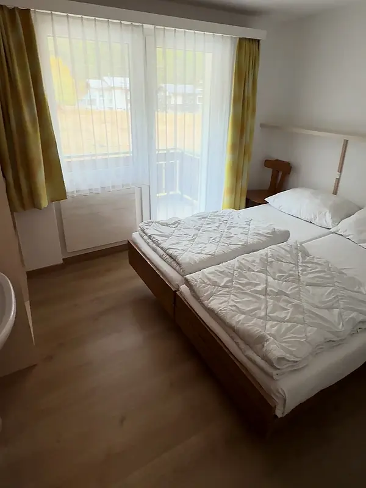
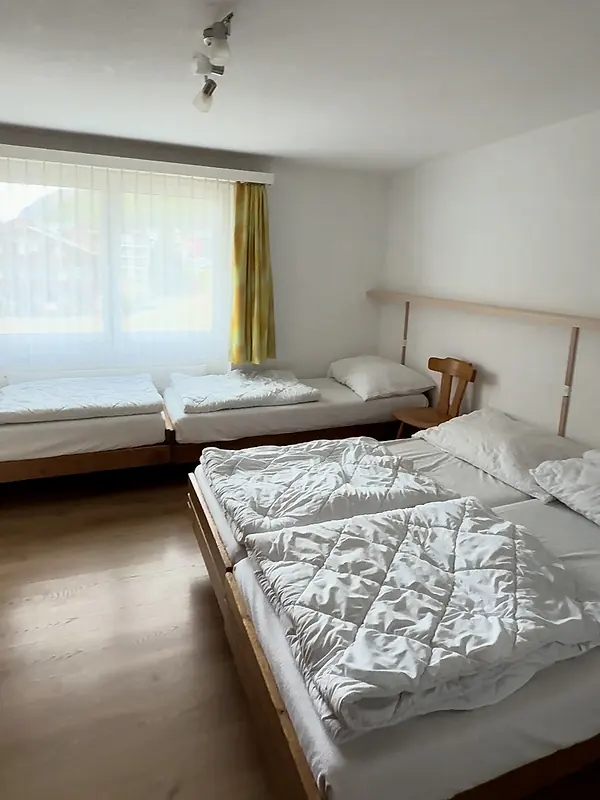
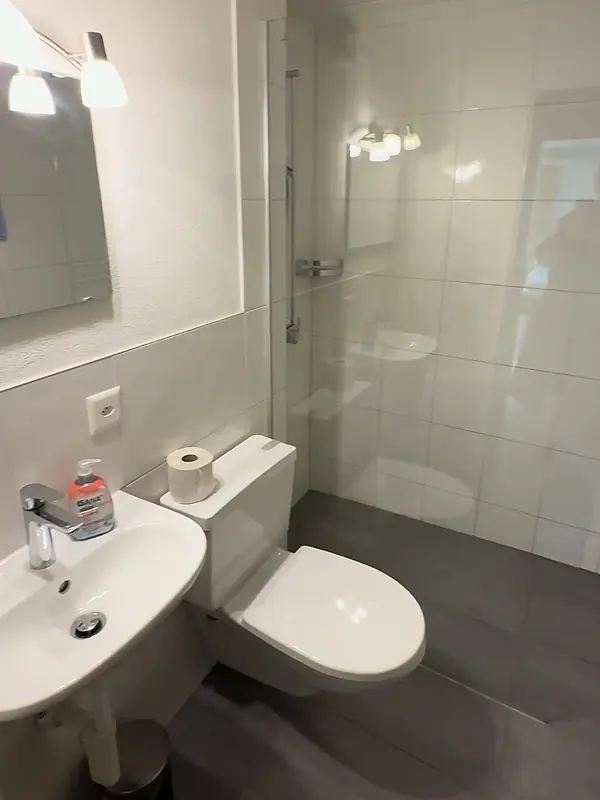
Харчування
Ми завжди піклуємось про якісне харчування і підлаштовуємось під кожну дитину. Усі фото — справжні, з наших попередніх змін.
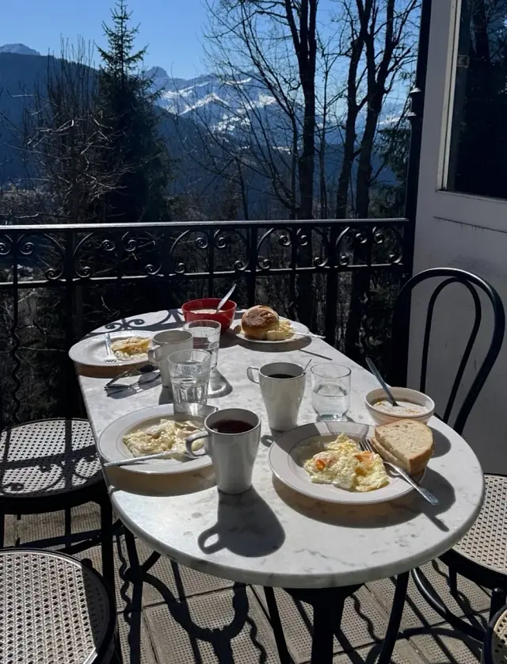
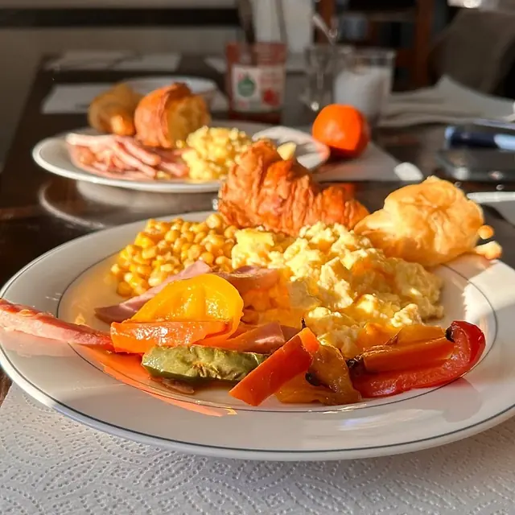
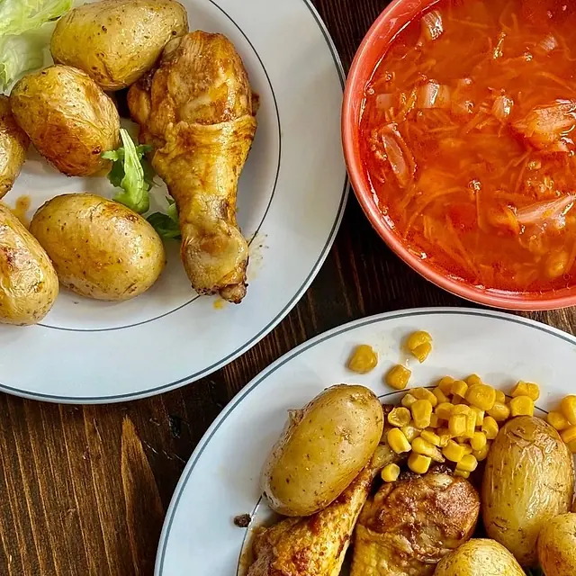
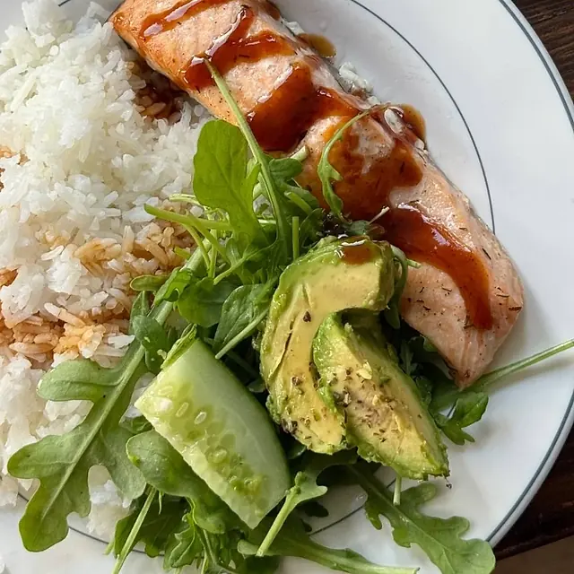
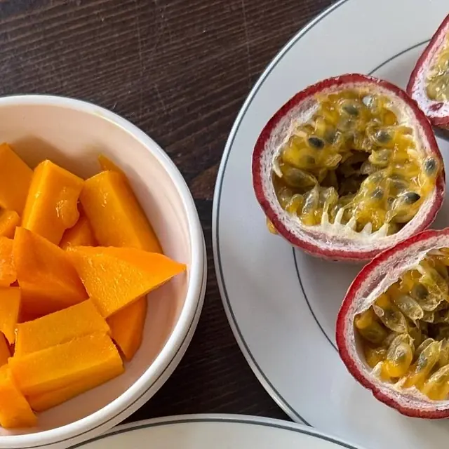
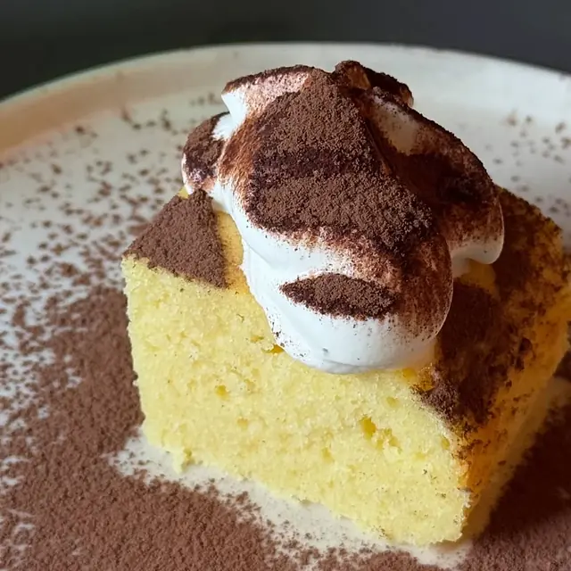
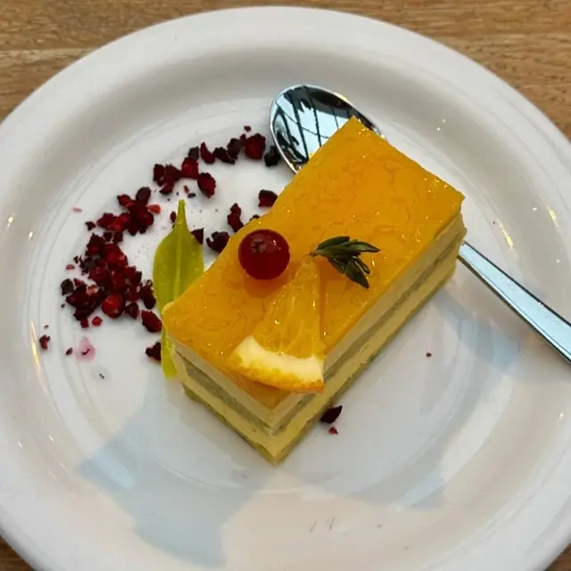
Сніданок, обід, вечеря — і смаколики між ними.
Підлаштовуємо страви під дитину.
Не подобається вибір страв — запропонуємо щось інше.
Обговорюємо заздалегідь, ще до поїздки.
Хто буде поруч
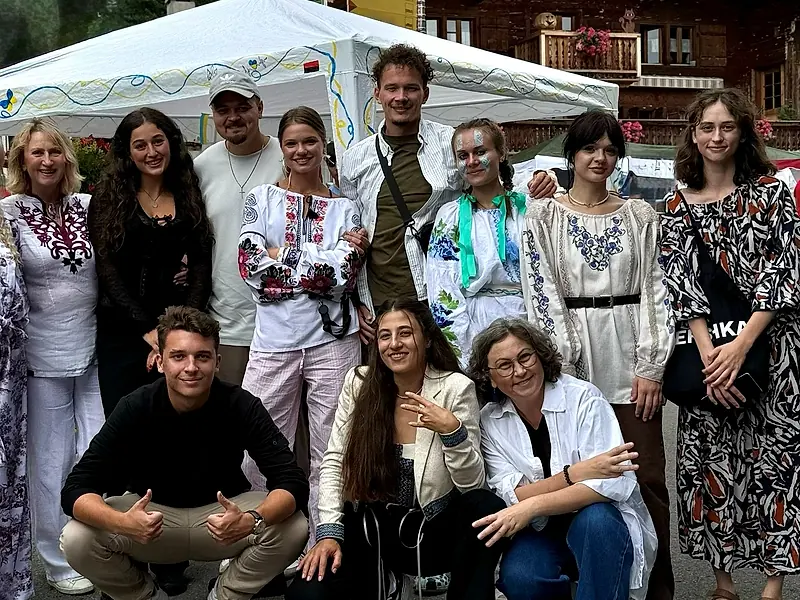
Наталія Колодницька заснувала ERA BAND CAMP. З нею ментори, психолог, медик та інструктори, які провели вже 24 зміни.
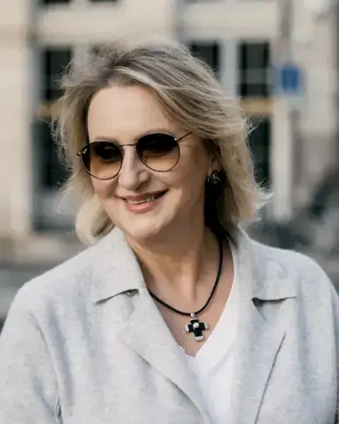
Керівниця та засновниця
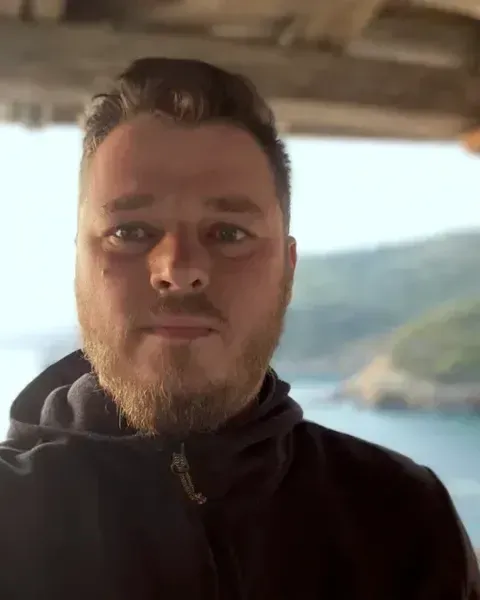
Ідеолог і консультант
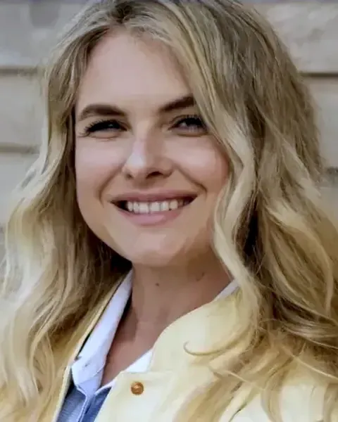
Психологиня
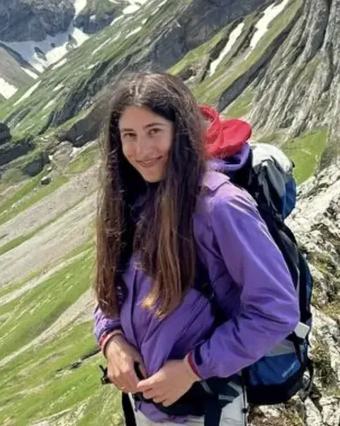
Інструкторка з лиж і сноуборду
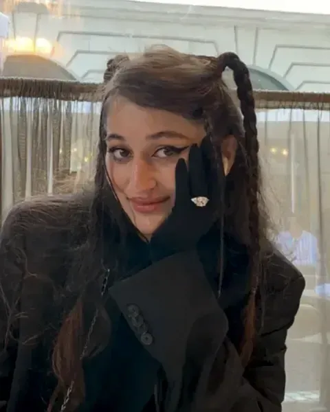
Креативна директорка
Вокальна тренерка, менторка
Пакети
Повний пакет — щоб нічого не рахувати й не доплачувати на місці.
1 835 €
Програма табору без дороги та зимових активностей.
Дорогу до Saas-Grund і назад організовуєте самі. Скіпас, прокат, страхування та активності — окремо.
2 435 €
Усе з «Базового» + трансфер разом із командою.
Плюс усе з «Базового»
Скіпас і прокат на решту днів, страхування та активності — окремо.
2 900 €
Жодних турбот — тільки гори, розвиток, нові знайомства й враження.
Плюс усе з «Екстра» і «Базового»
Окремо лише параглайдинг за бажанням і кишенькові гроші.
Для дітей військових — знижка 20%, для дітей загиблих, полонених і зниклих безвісти воїнів — до 40%. Деталі розповість менеджер.
Минулі зміни
Справжні кадри з наших зимових змін: схили, свята, Женева й вечори разом.


Текст відгуку.
Текст відгуку.
Текст відгуку.
Після них питання «їхати чи ні» зазвичай вирішується саме.
Питання батьків
«Базовий» — програма табору: проживання, харчування, екскурсії, майстер-класи й психолог, а дорога — самостійно. «Екстра» — те саме плюс трансфер Львів — Saas-Grund — Львів разом із командою, 2 дні катання, фотосесія з хаскі й терми. «Повний» — плюс страхування, 6 днів катання, швейцарська лижна школа, санна траса 11 км, собачі упряжки й терми.
Ні. Заняття ведуть українські інструктори в міні-групах за рівнем, тож новачки вчаться з нуля разом з такими ж новачками. У Повному пакеті прокат спорядження вже в ціні.
Медик їде з групою на всі 14 днів, туристичне страхування обовʼязкове для кожного учасника (у Повному пакеті вже в ціні). Ви одразу дізнаєтеся про все від нас, а менеджеру можна подзвонити будь-коли.
Телефони не забираємо, лише просимо менше сидіти в них. У батьківському Telegram-чаті щодня фото й новини, а менеджеру можна подзвонити будь-коли.
Ментори поруч 24/7, психолог у команді допомагає з адаптацією. Якщо дитина їде вперше, до поїздки організуємо онлайн-зустріч з психологом. Якщо щось не так, ми одразу на зв'язку з вами й разом шукаємо рішення.
Так. Можна повернути кошти або перенести участь на наступну зміну. Умови прописані в договорі, який ми підписуємо до оплати.
Місце бронюється передоплатою, решту можна вносити частинами до виїзду. Деталі менеджер розкаже під час розмови.
Закордонний паспорт дитини та дозвіл на виїзд. Повний перелік менеджер надішле після бронювання.
Список речей менеджер надішле після бронювання. Лижі, сноуборд і черевики брати не треба: прокат на місці — 40 € на день.
Триразове харчування з перекусами входить у всі пакети. Алергії й особливий раціон обговорюємо заздалегідь, ще до поїздки.
Не знайшли відповіді? Напишіть або зателефонуйте менеджеру — відповімо особисто.
ERA BAND CAMP · Winter 2026
Запрошення на Різдво в Альпах
18–31 грудня
або напишіть нам самі
Той самий номер у Viber і WhatsApp